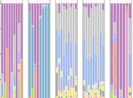

Publications
Papers and preprints
2026


Symbiotic Ammonia Oxidation in the Marine Environment
Published Annual Review of Marine Science 18, 409–427 (2026) DOI 10.1146/annurev-marine-040824-032008
The novel, wide-spread sponge-associated phylum Spongivicinota shows metabolic complementarity to its sister-phylum Latescibacterota
Published ISME Communications 6, ycag317 (2026) DOI 10.1093/ismeco/ycag317
Resolving the evolutionary duality of marine symbionts: redefining the genus Endozoicomonas and proposing Neoendozoicomonas gen. nov.
Published ISME Communications 6, ycag123 (2026) DOI 10.1093/ismeco/ycag123
Contrasting microbiomes in deep-sea scleractinian and octocoral species from the South Atlantic Ocean
Published Sustainable Microbiology 3, qvag048 (2026) DOI 10.1093/sumbio/qvag048
Metagenome-assembled genomes and viral sequences from deep-sea sponges
In press Scientific Data, in press (2026). No DOI yet
Excreta microbiota as an age-associated proxy for gut microbial communities in broiler chickens
In press Frontiers in Microbiology, in press (2026)
HiFiTaxa: a reproducible analysis pipeline for full length 16S rRNA gene and ITS amplicon sequencing from PacBio reads
Under review bioRxiv (2026). Under review DOI 10.64898/2026.11.03.763332
AmplinkOne: a reproducible and modular R workflow for downstream analysis of microbial marker-gene amplicon sequencing data
Under review Under review (2026). No DOI yet
Dual transcriptomics reveal commensal interactions between microalgae and phycosphere bacteria
Under review bioRxiv (2026). Under review DOI 10.64898/2026.02.09.704904
2025

Putative promiscuous symbionts in deep-sea corals and crinoids may contribute to nitrogen cycling
Published Microbiome 13, 234 (2025) DOI 10.1186/s40168-025-02229-0
2024

Simple Porifera holobiont reveals complex interactions between the host, an archaeon, a bacterium, and a phage
Published The ISME Journal 18, wrae197 (2024) DOI 10.1093/ismejo/wrae197
Not only for corals: exploring the uptake of beneficial microorganisms for corals by sponges
Published npj Biofilms and Microbiomes 10, 125 (2024) DOI 10.1038/s41522-024-00584-8
Bacteria associated with the in hospite Symbiodiniaceae’s phycosphere
Published iScience 27, 109531 (2024) DOI 10.1016/j.isci.2024.109531
2023

Species-specific relationships between deep sea sponges and their symbiotic Nitrosopumilaceae
Published The ISME Journal 17, 1517–1519 (2023) DOI 10.1038/s41396-023-01439-4
2022

Carbon fixation pathways across the bacterial and archaeal tree of life
Published PNAS Nexus 1, pgac226 (2022) DOI 10.1093/pnasnexus/pgac226
2018

Palm oil mill effluent (POME) as raw material for biohydrogen and methane production via dark fermentation
Published Renewable and Sustainable Energy Reviews 92, 676–684 (2018) DOI 10.1016/j.rser.2018.04.031
2017

Efficient biohydrogen production via dark fermentation from hydrolized palm oil mill effluent by non-commercial enzyme preparation
Published International Journal of Hydrogen Energy 42, 29166–29174 (2017) DOI 10.1016/j.ijhydene.2017.10.025
Science communication

Deep-sea sponges survive in complete darkness in ways we didn’t know before
The Conversation, 27 May 2026. Also published in Portuguese DOI 10.64628/aa.6aywrmmrf
Thumbnails are figures from the papers, reused under their licences, or the article’s own image.